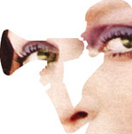
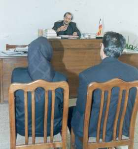
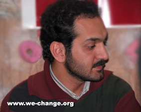
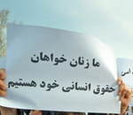

مقالههاى اين بخش
- 14 شهریور 1386
چالش ها و دستاوردها در نشستی با فعالان کمپین در شهرستان ها
جلوه جواهری
- 5 شهریور 1386
جلوه جواهری
- 29 مرداد 1386

سوسن طهماسبی
- 17 مرداد 1386
کاوه مظفري
- 2 مرداد 1386

نفيسه آزاد
- 20 تیر 1386

مریم مالک
- 17 تیر 1386
زارا امجدیان
- 15 تیر 1386
سمیه رشیدی
- 8 تیر 1386

شهلا انتصاری
- 1 تیر 1386

فاطمه نجاتي
- 30 خرداد 1386
- 25 خرداد 1386
منصوره شجاعی
- 22 خرداد 1386
فريبا داوودي مهاجر
- 4 خرداد 1386

بكتاش بابادي، علي معظمي
- 31 اردیبهشت 1386
بهاره هدایت
- 27 اردیبهشت 1386

کاوه مظفری
- 25 اردیبهشت 1386

سارا لقایی
- 20 اردیبهشت 1386
زهره اسدپور
- 18 اردیبهشت 1386

كاوه كرمانشاهی
- 12 اردیبهشت 1386
مزدك دانشور – روزبه گرجي بياني
- 10 اردیبهشت 1386

زینب پیغمبرزاده
- 4 اردیبهشت 1386
زهره امین
- 30 فروردین 1386
کاوه مظفري
- 27 فروردین 1386

نوشین کشاورزنیا
- 25 فروردین 1386

ایمان مظفری
- 22 فروردین 1386
توضیح خواسته های کمپین یک میلیون امضاء در زندان اوین
- 18 فروردین 1386

سمیه فرید
- 5 فروردین 1386

نازلی فرخی
- 2 فروردین 1386

خدیجه مقدم
- 25 اسفند 1385

عرفان افضلي
| ... | | | | | | | | | 270 |